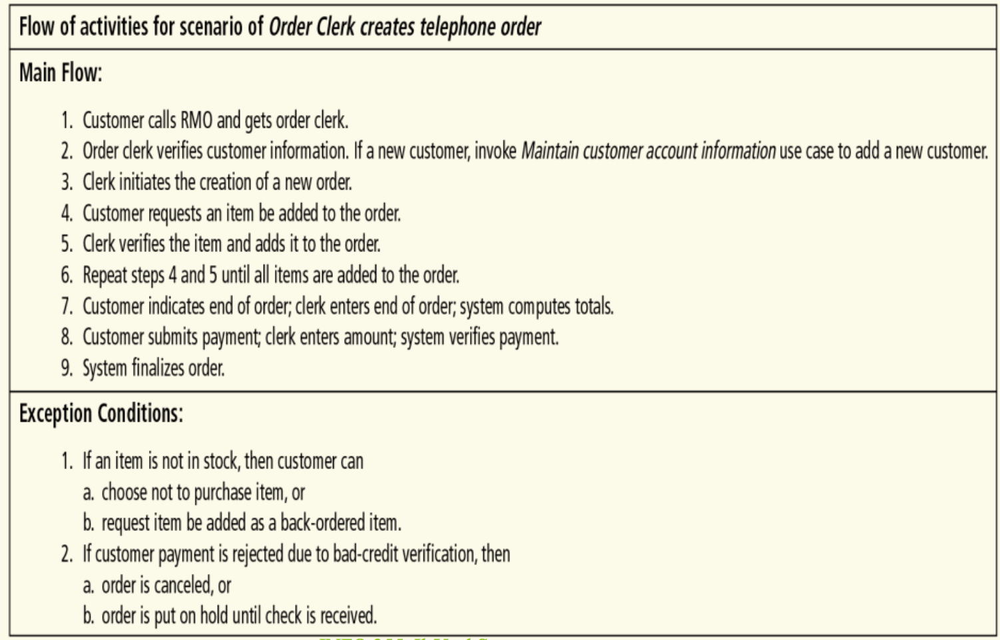

A use case specification describes a single use case in a system in detail.
Iterative development of use case descriptions
One way to write use cases is to do so iteratively by starting simple and adding more detail with each iteration.
Iterations:
- Brief description - A one-sentence summary of the use case
- Intermediate description - A detailed list of activities in the "happy" scenario of the use case, with some possible exceptions noted
- Fully developed description - A template fully filled out with all the details of the use case
Detailed example: Telephone order
To understand how to use the iterative approach to writing use case descriptions, let's walk through the writing of the description for a specific use case: placing a telephone order.
Iteration 1. Brief Description
To start, we write a very short summary of the use case:
Iteration 2. Intermediate Descripiton
Next, we elaborate by listing out the activities in the happy path of the use case:

Iteration 3. Fully Developed Description
Finally, we elaborate even further by filling in a copy of the template with all the details of the use case:
Use case description template